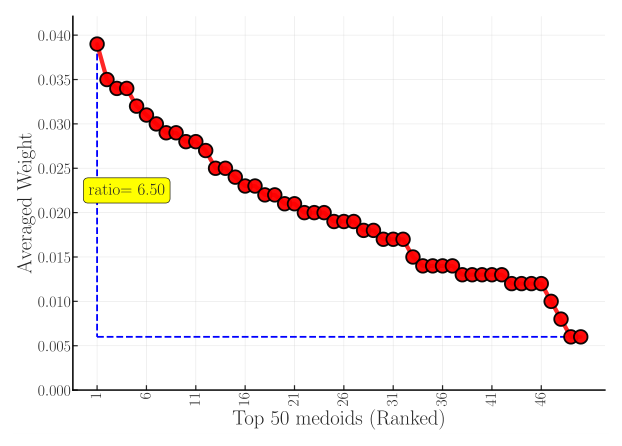
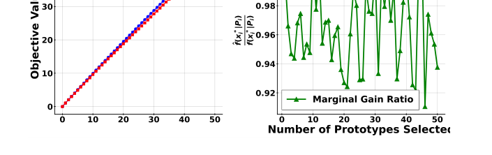
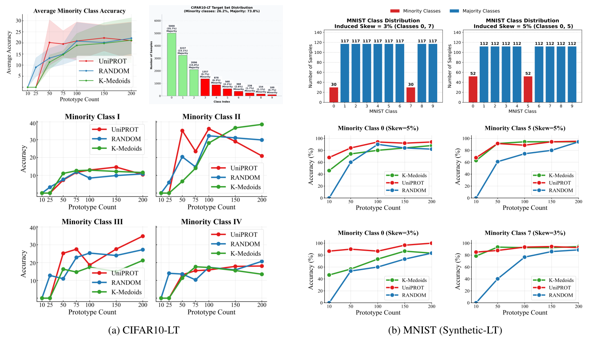
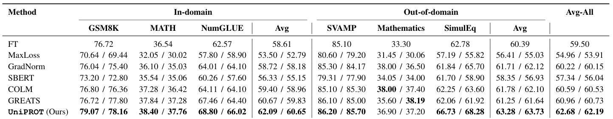
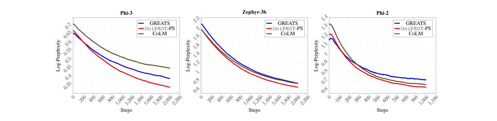
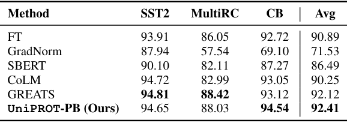
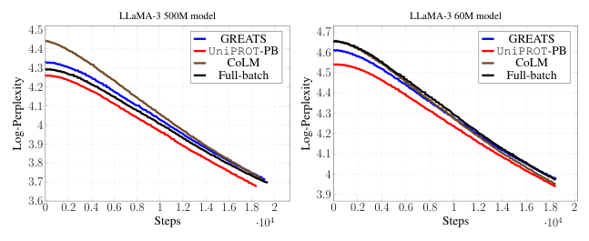
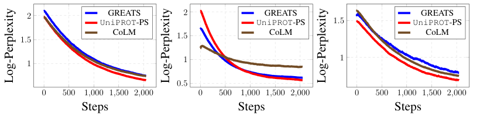
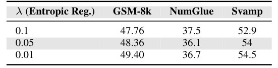

Why Should Every Selected Example Count Equally?
- Prototype or subset selection usually learns a weight for each chosen example. On imbalanced data the minority prototypes get tiny weights and barely count.
- UniPROT forces every selected prototype to carry exactly 1/k of the mass, and picks the set whose uniform distribution is closest to the data in optimal-transport terms.
- That objective is super-additive, so greedy has no guarantee. A partial-transport reformulation makes it submodular with a (1 − 1/e) guarantee, and the marginal gain has an O(n log n) closed form.
A small representative set is only useful if it represents the parts of the data we care about. Many subset-selection methods quietly assign weights to their selected examples. When the data is imbalanced, those weights let common classes or large sources dominate.
Selection as moving mass
Optimal transport (OT) asks for the cheapest way to move mass from one distribution to another. We use its similarity form: with \(S_{ij} = \beta - C_{ij}\), maximising similarity is the same as minimising cost.
In words: \(\gamma_{ij}\) is how much mass candidate \(x_i\) sends to data point \(y_j\). Rows must sum to the source masses and columns to the target masses. A good plan sends mass between similar points.
In words: popular selection objectives also choose the weights \(\mu\) on the selected set. In practice those weights come out highly skewed (Figure 1 of the paper, CIFAR-10), and minority-class prototypes end up with very little say.

In words: the selected set must send exactly the same amount of mass from every prototype. The only freedom left is which prototypes to pick.
From an intractable objective to a greedy one
Rescale to \(h(P) = |P|\,g(P) = \mathrm{OT}(\mathbf{1}_P,\, |P|\mathbf{1}/n)\). This is monotone but super-additive: \(h(P_1 \cup P_2) \ge h(P_1) + h(P_2)\), which means increasing rather than diminishing returns. Greedy algorithms have no general guarantee there. The fix is to relax the target-side constraint into an inequality:
In words: every prototype still ships exactly one unit. Each data point can receive at most its share \(k/n\), and the full budget is reached only once all \(k\) prototypes are chosen.
In words: the relaxed objective has diminishing returns, so plain greedy is near-optimal on it. At the final size \(k\), the relaxed and original objectives coincide and share optimal sets. The greedy answer is therefore within \(1 - 1/e \approx 63\%\) of the best uniform-weight prototype set.
A cheap marginal gain
Exact greedy would solve one partial-OT problem per candidate per step. Instead we freeze the current plan \(\gamma_P\) and ask how well a new candidate \(x_j\) could use the capacity that is left:
In words: pour the candidate's one unit of mass into the data points it is most similar to, but only into capacity that the current prototypes haven't already used. This is solved exactly by sorting a row of \(S\), in \(O(n \log n)\) time.

With this estimator, greedy still has a guarantee of \(f(\hat P) \ge (1 - e^{-\alpha})\,\mathrm{OPT}\) (Lemma 5), where \(\alpha\) compares the smallest and largest similarity mass a candidate could place. In practice the approximate and exact gains are nearly identical across greedy iterations. Each step solves one small entropic partial-OT problem by Bregman/Sinkhorn iterations, so selecting \(k\) prototypes costs \(O(kmn\log n)\), close to classical greedy facility location.
- Similarity matrix. Compute S between candidates and target data.
- Solve current plan. Entropic partial OT for the prototypes picked so far.
- Score candidates. Eq. 8 by sorting: fill leftover target capacity.
- Add the best. Repeat until k prototypes, each with mass 1/k.
UniPROT in four steps. For very large candidate pools, a stochastic-greedy variant scores a random subset of candidates each round.
Does uniformity actually help?
Minority classes
The first test is the one that motivated the method. Prototypes are selected without labels from a long-tailed target set, then used as a 1-nearest-neighbour classifier. If the prototypes represent the data well, minority classes should be classified correctly too.

Fine-tuning LLMs on imbalanced data
MathInstruct combines many sources of very different sizes. At each step we select half of a 128-example batch, either per source or over the whole batch, and fine-tune Phi-3.


When sources are unknown
Often the data has no source labels at all. In that case we select over the whole batch:

Pretraining from scratch

How sensitive is it?
Two knobs matter in practice: how many prototypes to keep, and how much entropic regularisation to use when solving the transport problem.


Uniformity is a choice, not a universal rule. If one class or source genuinely deserves more influence, equal weights won't express that. UniPROT is useful when selection should not silently equate "more examples in the source" with "more importance in the selected set".